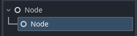
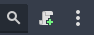
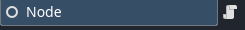

해당 문서에서는 고도엔진 조작에 대한 기초를 서술합니다. 엔진에 대하여 잘 모른다면 이 페이지보다는 공식문서의 튜토리얼을 참고하기를 바랍니다. 이 페이지에서 다룰 내용은 노드와 스크립트 추가, 시그널(Signal), 그리고 씬을 구성하는 방법입니다.
프로젝트를 만들고 나게 되면 보게 될 화면입니다. 상단 바를 주목하시면 [empty]로 표기된 씬이 사용자가 만들게 될 씬이 이미 포커싱되어 화면에 띄워져 있습니다.
여기서 왼쪽 위에 배치된 창이 바로 노드가 배치될 SceneTree(씬트리)이고 아래가 현재 프로젝트의 FileSystem(파일시스템) 입니다.
여기서 씬트리에 노드를 배치하겠습니다. 씬트리에서 단축키 Ctrl + A 또는 + 버튼을 누르면 씬을 추가할 수 있습니다.
여기서 노드를 추가해보겠습니다.
기본적으로 씬을 이루는 가장 기본단위는 노드이며 해당 노드는 2차원 좌표계를 가진 노드와 3차원 좌표계를 가진 노드,
그리고 캔버스 상에서 2차원 좌표와 앵커를 가진 Control노드가 있습니다.
이 페이지에서는 간단하게 노드만을 만들어 보겠습니다.
노드가 만들어졌다면 해당 노드에 속한 다른 노드도 만들어 보겠습니다. 방금 노드를 추가했던 방법과 같이, 이전의 과정을 한 번 더 반복하면 됩니다.

이렇게 노드 밑에 또 다른 노드가 추가되었습니다. 하지만 지금 추가된 노드를 보게 되면
아까 만들었던 노드와 이어진게 마치 위의 노드에 속한 것 처럼 연결된 것이 보일 것입니다.
이것을 고도에서는 노드트리라고 부르며 위의 노드는 부모노드, 부모노드에 속한 하위 노드들을 자식노드라고 부릅니다.
자식노드 또한 부모노드와 똑같이 하위노드를 가질 수 있으며
씬 또한 노드트리 안에서 부모자식 관계를 구성할 수 있습니다.
이제 더 나아가 노드에 스크립트를 추가할 것입니다. 노드에 스크립트를 추가하려면 해당 노드를 클릭 후 씬트리의 상단 바에 위치한 스크립트 추가 버튼을 클릭하면 됩니다.

Create 버튼을 누르게 되면 노드가 생성되게 되고, 스크립트가 노드에 붙여진게 표시가 됩니다.

이제 시그널을 만들고 내보내겠습니다.
Signal은 관찰자 패턴을 Godot의 설계버전에 맞게 간편화한 것입니다.
Control노드를 상속하고 있는 Button노드에 기본적으로 내장되어 있는 시그널 기능들을 보게 된다면, pressed(), button_downed()와 같이
버튼으로서 있을 법한 신호들이 있는데 그와 같이 사용자의 행동 또는 코드를 개발자가 감지하게 하여 또 다른 기능을 부르는 데에 유용합니다.
하지만 저희가 구현할 기능들은 대부분 웹에서의 행동을 감지하는데에 최적화 되어 있어야하지만, 기본적으로 제공되는 UI시그널들은 그렇지 못합니다.
개발자가 직접 관찰자를 만들어 기능을 부여해야하기에 Custom Signal을 간단하게 만드는 것부터 해보겠습니다.
이전 단계에서 부모노드에 스크립트를 붙였듯이 자식노드에도 스크립트를 붙이고, 부모노드는 'Parent', 자식노드는 'Child'라고 이름을 정한 뒤, 해당 노드의 스크립트 아이콘을 클릭하여 창으로 넘어가보겠습니다.
Child 노드에 시그널을 추가하는 방법은 위와 같이 내보낼 시그널 명과 시그널 타입을 스크립트에서 선언하면
인스펙터 > 노드 창에서 선언한 시그널을 볼 수 있게 됩니다.
이제 부모노드에서 실행 시, 노드가 런타임에서 씬트리 배치가 완료되는대로 신호를 내보내도록 만들어보겠습니다.
Parent 노드의 스크립트로 이동하여 다음과 같이 스크립트를 추가합니다.
1 2 3 4 5 6 7 8 | extends Node func _ready() -> void: $Child.signal_out.connect(get_signal) # 해당 노드의 신호와 연결 $Child.signal_out.emit() # 신호를 내보냄 func get_signal() -> void: print("get_signal()") #신호를 받은 결과 | cs |
스크립트가 추가되었으면, Ctrl + S로 씬을 저장한 후 실행시켜봅니다.